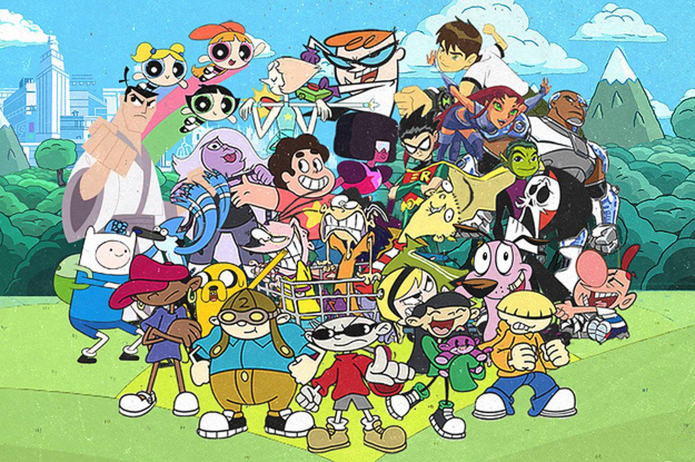

Much of Cartoon Network's original programming originates from the network's in-house studio, Cartoon Network Studios. Beginning as a division of Hanna-Barbera, this studio would produce some of the network's earliest original series, including Dexter's Laboratory, Cow and Chicken, I Am Weasel, Johnny Bravo, and The Powerpuff Girls. Cartoon Cartoons was once the branding for Cartoon Network's original animated television series, but it was retired by the network in 2004 after the CN City rebrand on June 14. The name was eventually discontinued in 2008. Additionally, several of the Cartoon Network's original series have been produced by studios other than the network's own in-house studio. Notable examples are Ed, Edd n Eddy, Courage the Cowardly Dog, and Codename: Kids Next Door. The name was resurrected by the network in 2021 for a new animated shorts program
